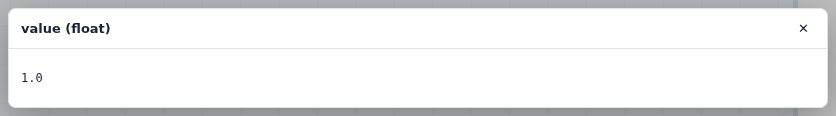
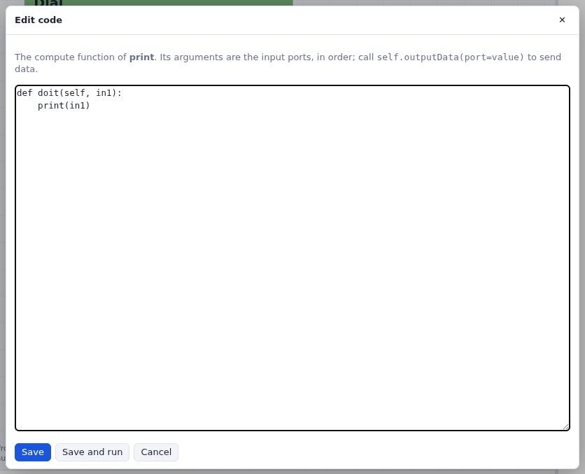

Your first network
A dial and a print node: adding, connecting, running, and looking inside a node.
Open the example start here (an empty network with the tutorial data) from the group Vision tutorial (see how to follow the tutorials).
Add two nodes
- In the libraries on the left, open Standard > Input. Hover over a node to read what it does.
- Drag Dial onto the network. Its dial is the widget of its
dialinput; its output isvalue, on its right edge. - Drag print (Standard > Output) to the right of the Dial. Its one input,
in1, has type None: it accepts anything. - Hover over a port: its name, its type, and whether it is required. The shape and color of a port show its type.
Connect and run
- Drag from the Dial's
valueto print'sin1. While you drag, the inputs that can take a float light up. - Press Run. The Dial sends its value, print prints it: open the Log under the
network to read
0.0. - Turn the dial: scroll over the number, drag its ⇄ handle, or type a value. With run on change checked, each change runs the network again, and print prints the new value.

Checkpoint dial and print
Run runs the nodes that have new data (the Dial, the first time) and what is below them; Run all runs everything again. See Running a network.
Look inside
Right-click the Dial's value port and choose Show data: the value it sent,
and its type.

value port.When a node runs, it runs its compute function. Double-click print (or right-click it and
choose Edit code…) to see it: a function whose arguments are the input ports.
Change it, for example to print('value:', in1), and press Save and run.

self.outputData(port=value) to send their results.Select and delete
- Shift-drag a rectangle around both nodes to select them; drag one of them to move both.
- Right-click print and choose Delete: the node goes, and its connection with it. To delete only a connection, right-click it and choose Delete connection.
In Vision the inputs were on top of a node and the outputs at the bottom,
nodes were moved with the middle button, and a plain drag selected. Here data flows from left to
right, the left button moves nodes, and a plain drag pans the network.